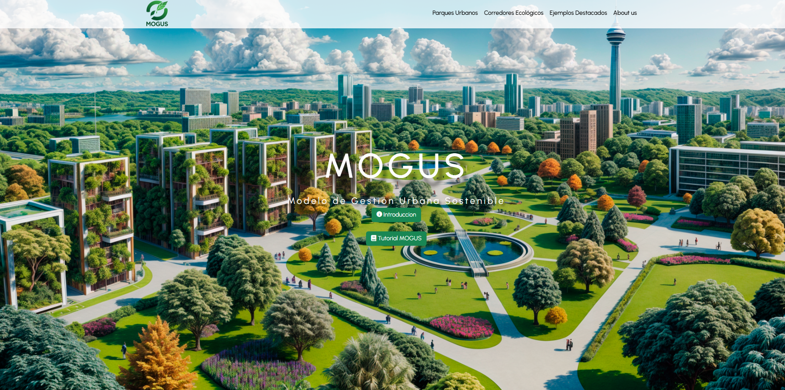
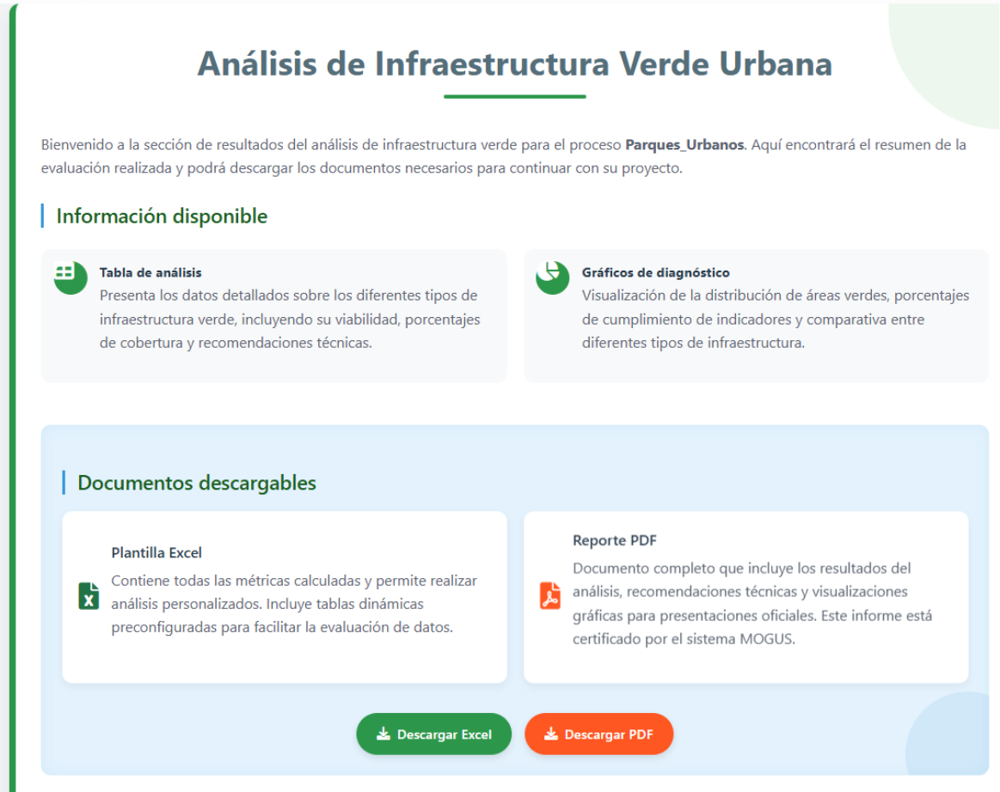

El proyecto
MOGUS es una aplicación web desarrollada como soporte técnico para un proyecto de tesis sobre construcción sustentable, de la Facultad de Arquitectura y Urbanismo de la Corporación Universitaria Americana. Permite el análisis cuantitativo de infraestructura verde urbana, evaluando proyectos bajo criterios de sostenibilidad para apoyar la planificación de ciudades más resilientes.
Funcionalidades clave
- Gestión completa de fases de proyecto (CRUD): para registrar y dar seguimiento al avance de cada iniciativa evaluada.
- Diagnóstico visual automático: mediante gráficos interactivos generados a partir de los datos ingresados.
- Exportación de reportes: tanto a Excel (con fórmulas automáticas) como a PDF con formato profesional.
- Evaluación de infraestructura verde: especializada en parques urbanos y corredores ecológicos.
Stack técnico
Visualización de la Plataforma

Vista principal de la plataforma MOGUS
Resultado de la evaluaciónCréditos y Colaboración
Proyecto de tesis de Andrés Garzón, Facultad de Arquitectura y
Urbanismo, Corporación Universitaria Americana — Modelo de Gestión
Urbana Sostenible (MOGUS).
Desarrollo técnico y arquitectura de software por Andrés Aranguren.